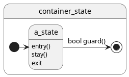

Example: Statemachines
Create a simple statemachine with the provided framework of the util library.
Util State Machine Framework
A state machine consists of a set of states and the transitions between states, of which one state must be designated as an initial state. Here’s a minimal example for the notation used in this example:

In terms of execution, the state machine behaves similar to a petry network: Initial states are activated and transactions pass the execution token on to the next state. Unlike a petry network, a state is either active or not, so there are not multiple tokens per state. A state will execute its stay() action as long as it has a token. When it becomes active, enter() is called. When the state is looses its execution token, exit() is called.
Guards on transitions return true or false; the first “true” transition wins.
So when does all this happen? The SDK’s inherently models discrete nested states. A parent state (the container) will take care of handling the entire state machine logic during its stay() action. So each call to the container-states stay() is one discrete update step to our state machine.
The IState Interface
States of the statemachine are defined by the IState interface:
-
class IState
The interface of an arbitrary state.
Subclassed by semodia::controlengine::native::util::statemachine::HierarchicState< mtp::ServiceStateId >, semodia::controlengine::native::util::statemachine::HierarchicState< idType >
Public Functions
-
virtual bool isActive() const = 0
A state is active either if it
isInitial()or ifenter()was called, butexit()was not. A final state is never active.- Returns:
true if active.
-
virtual bool isInitial() const = 0
A state is initial if it is active when the state machine starts (without invoking enter()). An initial state can only call stay() and exit();.
- Returns:
true if initial.
-
virtual bool isFinal() const = 0
A final state cannot be exited (transitions are always false) and does not execute stay();.
- Returns:
true if final.
-
virtual bool isHistorizing() const = 0
A historizing state will remember the last substate that was active when exit() or abort() was called. If re-entered, the last active state (or states) will be re-activated.
- Returns:
-
virtual bool isPaused() const = 0
A historizing state will use its initial substates on first activation; if exited, it is considered paused. The next entry will not activate initial states but case already active states to re-enter(). Aborting will not pause a historic state, next entry will use initial substates again.
- Returns:
-
virtual void enter() = 0
Activates initial substates (or historic states). If non-initial, this runs user-code if attached.
-
virtual void stay() = 0
Checks transitions in all active substates; exits() them if transitions are found and invokes enter() on transition targets if true. Calls stay() in active substates otherwise. Invokes user code if attached.
-
virtual bool isActive() const = 0
A basic implementation of this interface is available by the HierarchicState class, which will be used in the following. In this example, we will cover the usage of this class.
Historizing substates
If your business logic assumes hierarchical states in your state machine, which can be put on hold and resumed later on from the same sub state they were in when put on hold, take a look at the historizing parameter of the constructor and addSubstate() of the HierarchicState class.
The ITransition Interface
Transitions between states are defined by the ITransition interface:
-
class ITransition
Subclassed by semodia::controlengine::native::util::statemachine::Transition
The Transition class offers a basic implementation of this interface. Each state can have multiple outgoing transitions. However, only one outgoing transition can be executed per tick and state. Each transition has a guard function associated, which is used to evaluate, if the transition can be executed. When checking for the successor to an active state, the registered outgoing transitions are checked via their guard functions. The first transitions which is executable, will be executed. If none of the registered transitions is executable, the current active state will remain active.
Example Usage
To demonstrate the usage of the state machine framework, we now take a look at some example code. In the example, we model an example (hierarchical) state machine according to the following diagram:
![@startuml
[*] --> statemachine
statemachine --> [*]
state statemachine {
[*] --> level_1_A
[*] --> level_1_alpha
level_1_A --> level_1_B
level_1_B --> level_1_C1
level_1_B --> level_1_C2
level_1_C1 --> level_1_D
level_1_C2 --> level_1_hierarchic
level_1_level_1_hierarchic --> level_1_final
level_1_alpha --> level_1_beta
level_1_beta --> level_1_gamma
level_1_gamma --> level_1_level_1_hierarchic
level_1_hierarchic --> level_1_final
level_1_final --> [*]
state level_1_hierarchic {
[*] -> level_2_A
level_2_A --> level_2_B
level_2_B --> level_2_C
level_2_C --> [*]
}
}
@enduml](../../_images/plantuml-296301b4cc5e6f5d1f2bf0f804aa4055a1c120b3.png)
Let’s begin.
#include <iostream>
#include <list>
#include <string>
#include <cstdint>
#include "statemachine/HierarchicState.hpp"
#include "statemachine/Transition.hpp"
namespace cena = semodia::controlengine::native;
namespace statemachine = cena::util::statemachine;
using StringState = statemachine::HierarchicState<std::string>;
using StringStateList = std::list<std::shared_ptr<StringState>>;
We add a guard function for transitions - this one always allows the transition to the next state, i.e. always returns true. For your own application, guards on transitions could check for hardware-errors or other conditions.
void trueGuard(bool& allow)
{
allow = true;
return;
}
Another example for a guard function is this one: It permits a transition between states only after its third global invocation.
std::uint8_t waitThreeTimesGuardCounter = 0;
void waitThreeTimesGuard(bool& allow)
{
if (++waitThreeTimesGuardCounter > 3)
{
allow = true;
}
else
{
allow = false;
}
return;
}
Our example will print if a state is executing its entry(), stay(), leave() or abort action. These helper functions will be later used to verbosely output state changes in the state machine.
enum StateChange
{
ENTRY,
STAY,
LEAVE,
ABORT
};
void printStatus(std::shared_ptr<StringState> state, StateChange change)
{
std::string changeString;
switch (change)
{
case ENTRY:
changeString = "Entry";
break;
case STAY:
changeString = "Stay";
break;
case LEAVE:
changeString = "Leave";
break;
case ABORT:
changeString = "Abort";
break;
}
std::cout << state->getId() << ": " << changeString << std::endl;
return;
}
Also, we want to monitor which states are considered active and which are not. This helper function that iterates all states in a list and writes to the terminal, if they are active or not.
void printActiveStates(const StringStateList& states)
{
for (const auto& state : states)
{
std::cout << state->getId() << " isActive: " << state->isActive() << std::endl;
}
return;
}
Creating and running the state machine
int main()
{
First, we create the state machine and its internal states. States can be hierarchical and contain substates themselves to model a complex nested state machine. Thus, the state machine itself is modeled as a state.
Each state is identified by an identifier of the template parameter idType. In this example, we use simple strings for this purpose.
auto statemachine = std::make_shared<StringState>("statemachine", true, false, false);
Creating the states
The actual initial state and an all the other states on the first hierarchy level are defined.
auto level_1_A = std::make_shared<StringState>("level_1_A", true, false, false);
auto level_1_B = std::make_shared<StringState>("level_1_B", false, false, false);
auto level_1_C1 = std::make_shared<StringState>("level_1_C1", false, false, false);
auto level_1_C2 = std::make_shared<StringState>("level_1_C2", false, false, false);
auto level_1_alpha = std::make_shared<StringState>("level_1_alpha", true, false, false);
auto level_1_beta = std::make_shared<StringState>("level_1_beta", false, false, false);
auto level_1_gamma = std::make_shared<StringState>("level_1_gamma", false, false, false);
auto level_1_hierarchic = std::make_shared<StringState>("level_1_hierarchic", false, false, false);
auto level_1_final = std::make_shared<StringState>("level_1_final", false, true, false);
auto level_2_A = std::make_shared<StringState>("level_2_A", true, false, false);
auto level_2_B = std::make_shared<StringState>("level_2_B", false, false, false);
auto level_2_final = std::make_shared<StringState>("level_2_final", false, true, false);
The states of the first hierarchy level are added to the state machine.
The state machine / state container will manage these pointers for us after we call addSubstate. So you can safely only keep a reference to your statemachine container after constructing the state machine.
statemachine->addSubstate(level_1_A);
statemachine->addSubstate(level_1_B);
statemachine->addSubstate(level_1_C1);
statemachine->addSubstate(level_1_C2);
statemachine->addSubstate(level_1_alpha);
statemachine->addSubstate(level_1_beta);
statemachine->addSubstate(level_1_gamma);
statemachine->addSubstate(level_1_hierarchic);
statemachine->addSubstate(level_1_final);
The states of the second hierarchy are added to the hierarchical state level_1_hierarchic.
level_1_hierarchic->addSubstate(level_2_A);
level_1_hierarchic->addSubstate(level_2_B);
level_1_hierarchic->addSubstate(level_2_final);
Adding Transitions
To complete the construction of the state machine, we model the transitions between the states and register them.
Each transition has a guard function, which is invoked by the internal state machine logic to check, if the transition should be executed or not. Only active states are tested for their outgoing transitions on each tick and thus can progress to a new state.
Note
When a state has multiple transitions, the first transition to be tested and returning true wins. It is highly advisable to not rely on this mechanic and ensure that the guard function of the transitions test mutually exclusive logical expressions.
Tip
Parallel execution
If you need to model parallel execution in the state machine, you have to define multiple initial sub states (a ‘parallel’ state in harels state chart chart notation). This is however beyond the scope of this example.
In this example, the transition from level_1_B to level_1_D will not be executed, if we execute the transition from level_1_B` to level_1_C first, even, if this happens in the same tick. However, level_1_A and level_1_alpha are started both when entering the state machine and can be used both for parallel execution.
level_1_A->addTransition(level_1_B, trueGuard);
Lambdas can be used as a guard function as well.
level_1_B->addTransition(level_1_C1, [](bool& allow) { allow = true; });
The following transition is never followed, as there is another allowed outgoing transition declared in the line above.
level_1_B->addTransition(level_1_C2, trueGuard);
level_1_C1->addTransition(level_1_hierarchic, trueGuard);
level_1_C2->addTransition(level_1_hierarchic, trueGuard);
level_1_alpha->addTransition(level_1_beta, trueGuard);
level_1_beta->addTransition(level_1_gamma, trueGuard);
level_1_gamma->addTransition(level_1_hierarchic, trueGuard);
We only allow to proceed to the next state, if the internal final state has been reached.
level_1_hierarchic->addTransition(level_1_final, [&](bool& allow) { allow = level_2_final->isActive(); });
level_2_A->addTransition(level_2_B, waitThreeTimesGuard);
level_2_B->addTransition(level_2_final, trueGuard);
The state machine allows for the registration of a callback method that is invoked upon a state change. This is where business logic would be called.
In this example, we register a verbose printing method for each state change, so that we can see what’s happening on each tick.
For convenience, we add all states to a list that we can easily iterate on for demonstration purposes.
StringStateList states;
states.push_back(statemachine);
states.push_back(level_1_A);
states.push_back(level_1_B);
states.push_back(level_1_C1);
states.push_back(level_1_C2);
states.push_back(level_1_alpha);
states.push_back(level_1_beta);
states.push_back(level_1_gamma);
states.push_back(level_1_hierarchic);
states.push_back(level_1_final);
states.push_back(level_2_A);
states.push_back(level_2_B);
states.push_back(level_2_final);
for (auto& state : states)
{
state->setEntryUserAction([&]() { printStatus(state, ENTRY); });
state->setStayUserAction([&]() { printStatus(state, STAY); });
state->setExitUserAction([&]() { printStatus(state, LEAVE); });
state->setAbortUserAction([&]() { printStatus(state, ABORT); });
}
Running and updating the state logic
Before we start the execution of the state machine, we print the initial state. Notice how none of the states is active without our manual intervention.
std::cout << "Initial state: " << std::endl;
printActiveStates(states);
When running a state machine, we expect execution to start in initial states. Initial states get activated by their parent state when the parent state is enter()’d. So once we activate the toplevel state - statemachine - we should see both our initial states become active as well.
statemachine->enter();
std::cout << std::endl << "State after calling enter() on the top level state machine: " << std::endl;
printActiveStates(states);
Now we iterate via stay(), as long as we do not reach the final state of the state machine (level_1_final). For verbosity, we print the current state after each tick.
std::uint32_t iterations = 0;
do
{
std::cout << std::endl;
std::cout << "Iteration: " << ++iterations << std::endl;
statemachine->stay();
printActiveStates(states);
} while (!level_1_final->isActive() && statemachine->isActive());
Finally, we execute one additional tick.
std::cout << std::endl;
std::cout << "One additional tick after reaching the final state:" << std::endl;
statemachine->stay();
printActiveStates(states);
Resetting State Machines
State machines are caught in a final states if they have finished executing whatever they were meant to do. To reset the state machine, we need to deactivate all states in the toplevel state, then reactivate all the initial states. Surprisingly, this is exactly what exit() and enter() do.
To deactivate the FSM, it is enough to exit it:
std::cout << "Stopping state machine by calling exit(), so we can reset it later" << std::endl;
statemachine->exit();
Observe in the console message above that level_1_final does not issue a “LEAVING”-message? Final states do not execute their exit() functions, as conceptually, they represent a sink for the execution token. If the token could leave the state again… well, it would not be final, would it?
Note that any still active states would abort(), so it is always a good idea to ensure that your final states are active.
Now, we can simply re-enter() the toplevel state to activate the initial states and start over.
std::cout << "Resetting state machine to initial state by calling enter()" << std::endl;
statemachine->enter();
return 0;
}
Source Code
Here’s the complete source code from this example:
1#include <iostream>
2#include <list>
3#include <string>
4#include <cstdint>
5
6#include "statemachine/HierarchicState.hpp"
7#include "statemachine/Transition.hpp"
8
9namespace cena = semodia::controlengine::native;
10namespace statemachine = cena::util::statemachine;
11using StringState = statemachine::HierarchicState<std::string>;
12using StringStateList = std::list<std::shared_ptr<StringState>>;
13
14void trueGuard(bool& allow)
15{
16 allow = true;
17 return;
18}
19
20std::uint8_t waitThreeTimesGuardCounter = 0;
21void waitThreeTimesGuard(bool& allow)
22{
23 if (++waitThreeTimesGuardCounter > 3)
24 {
25 allow = true;
26 }
27 else
28 {
29 allow = false;
30 }
31 return;
32}
33
34enum StateChange
35{
36 ENTRY,
37 STAY,
38 LEAVE,
39 ABORT
40};
41
42void printStatus(std::shared_ptr<StringState> state, StateChange change)
43{
44 std::string changeString;
45 switch (change)
46 {
47 case ENTRY:
48 changeString = "Entry";
49 break;
50 case STAY:
51 changeString = "Stay";
52 break;
53 case LEAVE:
54 changeString = "Leave";
55 break;
56 case ABORT:
57 changeString = "Abort";
58 break;
59 }
60 std::cout << state->getId() << ": " << changeString << std::endl;
61 return;
62}
63
64void printActiveStates(const StringStateList& states)
65{
66 for (const auto& state : states)
67 {
68 std::cout << state->getId() << " isActive: " << state->isActive() << std::endl;
69 }
70 return;
71}
72
73int main()
74{
75 auto statemachine = std::make_shared<StringState>("statemachine", true, false, false);
76
77 auto level_1_A = std::make_shared<StringState>("level_1_A", true, false, false);
78 auto level_1_B = std::make_shared<StringState>("level_1_B", false, false, false);
79 auto level_1_C1 = std::make_shared<StringState>("level_1_C1", false, false, false);
80 auto level_1_C2 = std::make_shared<StringState>("level_1_C2", false, false, false);
81
82 auto level_1_alpha = std::make_shared<StringState>("level_1_alpha", true, false, false);
83 auto level_1_beta = std::make_shared<StringState>("level_1_beta", false, false, false);
84 auto level_1_gamma = std::make_shared<StringState>("level_1_gamma", false, false, false);
85
86 auto level_1_hierarchic = std::make_shared<StringState>("level_1_hierarchic", false, false, false);
87 auto level_1_final = std::make_shared<StringState>("level_1_final", false, true, false);
88
89 auto level_2_A = std::make_shared<StringState>("level_2_A", true, false, false);
90 auto level_2_B = std::make_shared<StringState>("level_2_B", false, false, false);
91 auto level_2_final = std::make_shared<StringState>("level_2_final", false, true, false);
92
93
94 statemachine->addSubstate(level_1_A);
95 statemachine->addSubstate(level_1_B);
96 statemachine->addSubstate(level_1_C1);
97 statemachine->addSubstate(level_1_C2);
98
99 statemachine->addSubstate(level_1_alpha);
100 statemachine->addSubstate(level_1_beta);
101 statemachine->addSubstate(level_1_gamma);
102
103 statemachine->addSubstate(level_1_hierarchic);
104 statemachine->addSubstate(level_1_final);
105
106 level_1_hierarchic->addSubstate(level_2_A);
107 level_1_hierarchic->addSubstate(level_2_B);
108 level_1_hierarchic->addSubstate(level_2_final);
109
110 level_1_A->addTransition(level_1_B, trueGuard);
111
112 level_1_B->addTransition(level_1_C1, [](bool& allow) { allow = true; });
113
114 level_1_B->addTransition(level_1_C2, trueGuard);
115
116 level_1_C1->addTransition(level_1_hierarchic, trueGuard);
117 level_1_C2->addTransition(level_1_hierarchic, trueGuard);
118
119 level_1_alpha->addTransition(level_1_beta, trueGuard);
120 level_1_beta->addTransition(level_1_gamma, trueGuard);
121 level_1_gamma->addTransition(level_1_hierarchic, trueGuard);
122
123 level_1_hierarchic->addTransition(level_1_final, [&](bool& allow) { allow = level_2_final->isActive(); });
124
125 level_2_A->addTransition(level_2_B, waitThreeTimesGuard);
126 level_2_B->addTransition(level_2_final, trueGuard);
127
128 StringStateList states;
129 states.push_back(statemachine);
130
131 states.push_back(level_1_A);
132 states.push_back(level_1_B);
133 states.push_back(level_1_C1);
134 states.push_back(level_1_C2);
135
136 states.push_back(level_1_alpha);
137 states.push_back(level_1_beta);
138 states.push_back(level_1_gamma);
139
140 states.push_back(level_1_hierarchic);
141 states.push_back(level_1_final);
142
143 states.push_back(level_2_A);
144 states.push_back(level_2_B);
145 states.push_back(level_2_final);
146 for (auto& state : states)
147 {
148 state->setEntryUserAction([&]() { printStatus(state, ENTRY); });
149 state->setStayUserAction([&]() { printStatus(state, STAY); });
150 state->setExitUserAction([&]() { printStatus(state, LEAVE); });
151 state->setAbortUserAction([&]() { printStatus(state, ABORT); });
152 }
153
154
155 std::cout << "Initial state: " << std::endl;
156 printActiveStates(states);
157
158 statemachine->enter();
159 std::cout << std::endl << "State after calling enter() on the top level state machine: " << std::endl;
160 printActiveStates(states);
161
162 std::uint32_t iterations = 0;
163 do
164 {
165 std::cout << std::endl;
166 std::cout << "Iteration: " << ++iterations << std::endl;
167 statemachine->stay();
168 printActiveStates(states);
169 } while (!level_1_final->isActive() && statemachine->isActive());
170
171 std::cout << std::endl;
172 std::cout << "One additional tick after reaching the final state:" << std::endl;
173 statemachine->stay();
174 printActiveStates(states);
175
176 std::cout << "Stopping state machine by calling exit(), so we can reset it later" << std::endl;
177 statemachine->exit();
178
179 std::cout << "Resetting state machine to initial state by calling enter()" << std::endl;
180 statemachine->enter();
181
182 return 0;
183}